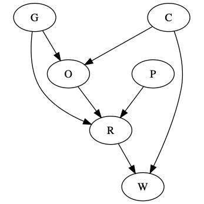
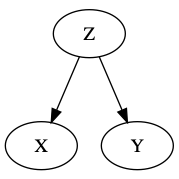

$$ \newcommand{\dbot}{\mathbin{\text{$\bot\mkern-8mu\bot$}}} \newcommand{\yes}{\text{yes}} \newcommand{\no}{\text{no}} \newcommand{\p}{^\prime} $$
A Bayesian Network is a DAG (directed acyclic graph). A graph will admit a distribution, which is a mapping between the graph and an expanded Bayesian formula. For example
$$ A \rightarrow B \rightarrow C $$
admits
$$ P(a, b, c) = P(a) P(b | a) P(c | b) $$
You can write the dependence tables like this
$$ \begin{array}{c|c} B & P(A=true | b) \\ \hline false & P(A=true | b=false) \\ true & P(A=true | b=true) \\ \end{array} $$
Given a set \(Z\) of nodes, the path
$$ x \leftrightarrow w_1 \leftrightarrow \cdots \leftrightarrow w_k \leftrightarrow y $$
is blocked by \(Z\) is \(\exists w_i\) such that one of the following is true:
If \(P\) isa distribution such that factors according to DAG \(G\), then \(X \bot Y | Z\) in \(G\) \(\implies\) \(X \dbot Y | Z\) in \(P\).
If every path between \(X\) and \(Y\) is blocked by \(Z\), then \(X\) and \(Y\) are d-separeted by \(Z\):
$$ X \bot Y | Z $$
i.e. \(X \bot Y\) in \(G\) is there is an unblocked path from \(X\) to \(Y\) in \(G\). Note that the direction of arrows don't matter for this path! Can flow 'up' arrows.
Consider this example:
This graph actually represents the Monty Hall problem, where \(G\) is "guess", \(O\) is "opened door", \(C\) is "correct door", \(R\) is "revised guess", \(W\) is "win" \(P\) is "policy"
$$ \begin{array}{l|c} G \bot P | \varnothing? & \yes \\ G \bot P | \{ W \}? & \no \\ G \bot W | \varnothing? & \yes \\ G \bot W | \{ O \}? & \no \\ G \bot W | \{ R \}? & \no \\ G \bot W | \{ R, C \}? & \yes \end{array} $$
Definition. Law of Conditional Probability
$$ P(x_1 | x_2, \dots, x_k) = \frac{P(x_1, x_2, \dots, x_k)}{P(x_2, \dots, x_k)} $$
Definition. Law of Total Probability
$$ P(x_1, x_2, \dots, x_{n-1}) = \sum_{x_n} P(x_1, x_2, \dots, x_n) $$
Given a fork
then we have \(X \dbot Y | Z\) and \(X \not\dbot Y\). Then,
$$ \begin{aligned} P(x | y, z) &= \frac{P(x, y, z)}{P(y, z)} \\ &= \frac{P(x, y, z)}{\sum_{x\p} P(x\p, y, z)} \\ &= \frac{P(z) P(x | z) P(y | z)}{P(z) P(x\p | z) P(y | z) \sum_{x\p} P(x\p | z)} \\ &= P(x | z) \end{aligned} $$